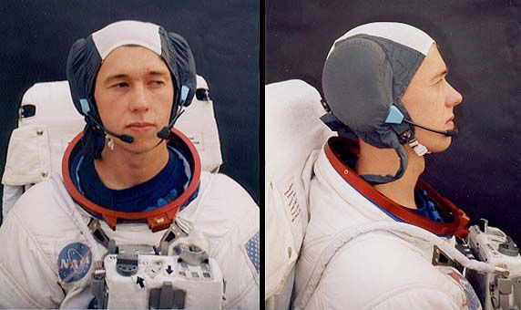

The Apollo 10 lunar module was named Snoopy and the command module Charlie Brown. While not included in the official mission logo, Charlie Brown and Snoopy became semi-official mascots for the mission. Schulz also drew some special mission-related artwork for NASA, and several regular strips related to the mission, one showing Snoopy en route to the Moon atop his doghouse with a fishbowl on his head for a helmet.
fabric cap worn by NASA astronauts as part of the Extravehicular Mobility Unit is known as a "Snoopy cap", a reference to how the white crown and brown earflaps of the cap resemble Snoopy's fur and ears.
Silver Snoopy award is a special NASA honor, in the form of a sterling silver pin with an engraving of Snoopy in a spacesuit helmet. It is given by an astronaut to someone who works in the space program that has gone above and beyond in pursuit of quality and safety.